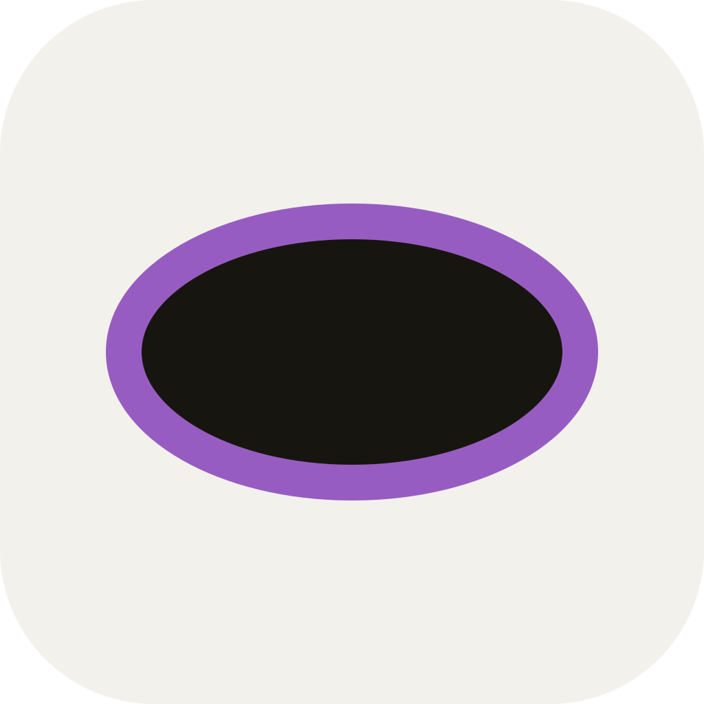
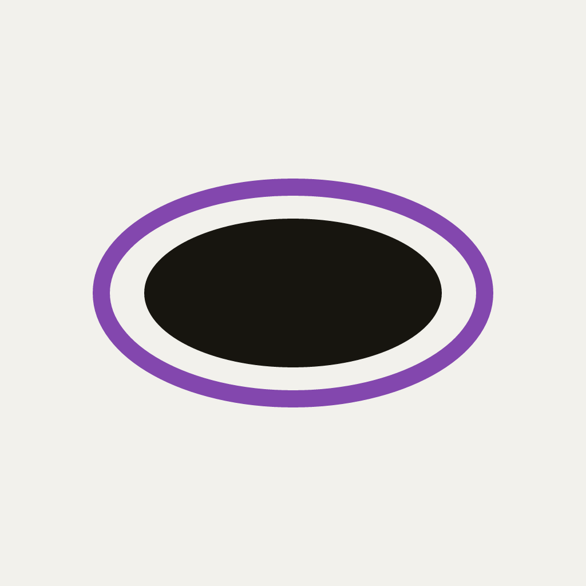

Design system
Oval is a plain-text format for voting guides. Its identity is the ballot itself: paper,
ink, and the printed oval a voter darkens. This page is the system that identity produces:
the mark, the colors, the type, and the components, all drawn from
tokens/oval.css and
css/components.css.
A printed ring, a gap of paper, and the voter's ink inside. The ring is the marking purple; the fill is ink. The ellipse is 1.75 times as wide as it is tall, the ring is 0.075 of the height, and the fill is 0.65 of the height wide and centered, which leaves the gap that makes it read as a marked ballot rather than a dot.
mark.svg
mark-reverse.svg
mark-mono.svg
mark-outline.svg
favicon.svg at 32 px

icon.svg, 1024 px

avatar.png, 1024 px
Keep half the mark's height clear on every side.
16 px is the minimum height on screen; below that, use the favicon, whose ring is thicker.
The wordmark is Instrument Serif set as outlines, so it does not depend on the font being installed. The lockup places the mark at the cap height of the word, one fifth of the type size apart. Use the lockup where the name must be read, the mark alone where the brand is already known.
wordmark.svg
wordmark-reverse.svg
lockup.svg
lockup-reverse.svg
The mark is a marked ballot and nothing else. Every rule below protects that reading.
Ink fill, purple ring, on paper.
The reverse file on dark paper.
One color when color is unavailable.
Never recolor it, and never in party colors.
Never stretch or squash it.
Never rotate it.
No shadows, gradients, or outlines.
Not on patterns or photographs.
Never reset the wordmark in another face, even Newsreader.
Never beside a candidate or party as if it were their bubble.
The logo and wordmark identify the Oval project. Use them to refer to Oval, to show that a tool reads or writes the format, or to link to oval.vote. Do not use them to suggest that the project endorses a guide, a candidate, a party, or a position.
Paper, ink, and the marking purple, with a green and a red reserved for stances. Red and blue carry party meaning in American politics, so the accent belongs to no party and the only red means "against" on a specific question. Both themes are designed, not inverted: light paper is warm stock, dark paper is neutral graphite, and the purple is lighter on dark so that it passes for text on both.
| Token | Role | On light paper | On dark paper | Qualifies for |
|---|---|---|---|---|
| ink | Text | 16.1 | 14.9 | Everything |
| ink-soft | Secondary text | 6.0 | 6.4 | Body text (AA) |
| mark | Ring, underlines, focus, badges | 5.3 | 6.7 | Body text (AA) |
| support | Stance text | 5.7 | 8.4 | Body text (AA) |
| oppose | Stance text | 4.8 | 6.4 | Body text (AA) |
| rule | Hairlines | 1.4 | 1.3 | Decoration only |
Support and oppose color only stance text. Parties are labeled in ink.
Newsreader for reading, Public Sans for interface, IBM Plex Mono for Oval source, and Instrument Serif for the wordmark and display sizes only. Newsreader is a newspaper text face, where voting guides have lived for a century; Public Sans is the typeface of the United States Web Design System. All four are open source, served from Google Fonts, with fallback stacks named in the tokens.
Franklin votes
Franklin Voter Guide
Federal Government
President and Vice President
We interviewed every candidate who agreed to meet with us.
Hana Nakamura's first term delivered the port funding Franklin has sought for a decade. The challengers have not released a platform beyond a pledge to cut waste.
Unexpired term ending January 3, 2027. Vote for one.
Recommended
contest "City Attorney" single
Running text sits on a measure of 44rem. Headings balance their line breaks.
A 4-pixel base. The scale skips 5 and 7 so that choices stay few, and layouts combine steps rather than invent values.
Rules are 1px hairlines in the rule color. There are no shadows; surfaces are raised by tone and a rule.
Classes in css/components.css, each prefixed
oval-, built only from the tokens. They are enough for the
guide renderer, the website, and the editor's chrome.
Primary is ink on paper and turns purple on hover; purple is never the resting color of a control.
invalid-date: the date is not a calendar date.
Party badges are always the plain badge. Tinted badges are for stances and document state.
Measure
Proposition 4
Authorizes $1.2 billion in bonds for seismic retrofits of public schools.
Vote yes
Rosa Delgado
Has run the office for six years without a lost appeal.
A callout without a stance uses the marking purple.
The bubble is a CSS ellipse, filled in ink. As a static mark it uses
oval-bubble-filled; as a control it wraps a hidden radio,
as here, and fills when checked.
| Contest | Method | Campaigns | Recommendation |
|---|---|---|---|
| Mayor | Rank up to 5 | 7 | Okafor, then Lindqvist |
| City Attorney | Vote for one | 2 | Delgado |
| Board of Education | Vote for up to 3 | 9 | No position |
oval 1 guide "Franklin Voter Guide" election "November 3, 2026 General Election" date 2026-11-03 # Candidates are declared once and referenced by identifier. candidate @delgado "Rosa Delgado"
Keywords take the marking purple, strings take support green, comments take soft ink.
Inline code is code.oval-code.
prefers-reduced-motion.
Load the tokens, then the components if you want them, then the fonts. The dark values
apply under prefers-color-scheme: dark and under
[data-theme="dark"], so a page can follow the system or set
a theme itself, as the picker at the top of this page does.
<link rel="stylesheet" href="https://brand.oval.vote/tokens/oval.css" /> <link rel="stylesheet" href="https://brand.oval.vote/css/components.css" /> <link rel="preconnect" href="https://fonts.googleapis.com" /> <link rel="preconnect" href="https://fonts.gstatic.com" crossorigin /> <link rel="stylesheet" href="https://fonts.googleapis.com/css2?family=Instrument+Serif&family=Newsreader:ital,opsz,wght@0,6..72,400;0,6..72,500;1,6..72,400&family=Public+Sans:wght@400;600&family=IBM+Plex+Mono:wght@400;500&display=swap" />
tokens/oval.json is the same set as data, with a
description on each token, for tools that generate from it.